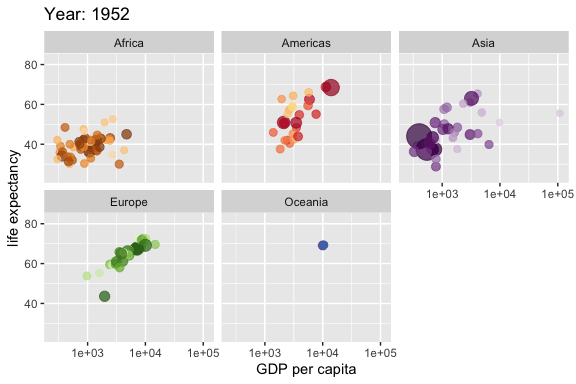

Topic 3 Open-Source Tools for Data Viz
This note introduces software programs and platforms to be used for this data visualization course.
3.1 DataViz
w <- ggplot(gapminder, aes(gdpPercap, lifeExp,
size = pop, colour = country)) +
geom_point(alpha = 0.7, show.legend = FALSE) +
scale_colour_manual(values = country_colors) +
scale_size(range = c(2, 12)) +
scale_x_log10() +
# break down the previous single plot by continent
facet_wrap(~continent) +
# Here comes the gganimate specific bits
labs(title = 'Year: {frame_time}',
x = 'GDP per capita', y = 'life expectancy') +
transition_time(year) +
ease_aes('linear')
###
animate(w, renderer = gifski_renderer())
3.2 R & RStudio
3.2.1 What is R?

R is a language and environment for statistical computing and graphics. It is a GNU project that is similar to the S language and environment which was developed at Bell Laboratories (formerly AT&T, now Lucent Technologies) by John Chambers and colleagues. R can be considered as a different implementation of S. There are some important differences, but much code written for S runs unaltered under R.
R is an integrated suite of software facilities for data manipulation, calculation, and graphical display. It includes
- an effective data handling and storage facility,
- a suite of operators for calculations on arrays, in particular matrices,
- a large, coherent, integrated collection of intermediate tools for data analysis,
- graphical facilities for data analysis and display either on-screen or on hardcopy, and
- a well-developed, simple, and effective programming language that includes conditionals, loops, user-defined recursive functions, and input and output facilities.
3.2.2 RStudio
RStudio is an integrated development environment (IDE) for R. It includes a console and syntax-highlighting editor that supports direct code execution, as well as tools for plotting, history, debugging, and workspace management.
There are two versions of RStudio: RStudio Desktop and RStudio Server. Both versions have free open-source and commercial editions. We use the free open-source edition of RStudio Desktop that has the following features:
- Access RStudio locally
- Syntax highlighting, code completion, and smart indentation
- Execute R code directly from the source editor
- Quickly jump to function definitions
- View content changes in real time with the Visual Markdown Editor
- Easily manage multiple working directories using projects
- Integrated R help and documentation
- Interactive debugger to diagnose and fix errors
- Extensive package development tools
3.2.3 The Relationship between R and RStudio
R and RStudio are two distinctly different applications that serve different purposes. R is a programming language used for statistical computing while RStudio uses the R language to develop statistical programs.
R and RStudio are not separate versions of the same program, and cannot be substituted for one another. R may be used without RStudio, but RStudio may not be used without R.
3.3 Tableau Public
3.3.1 About Tableau
Tableau is a powerful and fastest-growing data visualization tool used in the Business Intelligence Industry. The great thing about Tableau software is that it doesnt require any technical or any kind of programming skills to operate. Tableau suite has different products that confuse new users.

Tableau Desktop has a rich feature set and allows you to code and customize reports. It is not free (actually pretty expensive)!
Tableau Public creates workbooks that cannot be saved locally, in turn, it should be saved to Tableaus
public serverin the cloud which can be viewed and accessed by anyone. You need to download and install it on your computer to design workbooks offline and then save them to Tableauspublic server. It is totally free!Tableau Server is specifically used to share the workbooks, and visualizations that are created in the Tableau Desktop application across the organization. It is NOT free! . However, the public server is free.
Tableau Online has all the similar functionalities of the Tableau Public, but the data is stored on servers hosted in the cloud which are maintained by the Tableau group. That means you design workbooks on the Tableaus public server. It is also free!
Tableau Reader is a free tool that allows you to view the workbooks and visualizations created using Tableau Desktop or Tableau Public.
3.4 Shiny Server
3.4.1 What is shiny.io?
Shinyapps.io is an easy-to-use, scalable place to put Shiny applications so that other people can use them over the web without having to set up a Shiny Server.
Shinyapps.io is not completely free but has a free version with limited. We can register a free account for practice purposes. The following is brief information about Shinyapps.io.

3.4.2 Register An Account with shiny.io
If you dont have an account with shinyapps.io, you need to register an account. Otherwise, log into the account to publish your ShinyApps. The following two hyperlink buttons provide the links to the appropriate web pages.

You can also find the official web page at
https://www.shinyapps.io/

3.5 RPubs

3.5.2 Register An Account With RPubs
First of all, you need to sign up for an account with RPubs if you dont have one. Otherwise, sign in to your existing RPubs account. The following two hyperlink buttons will bring you to the appropriate website.
3.6 Github
3.6.1 What is Github?
GitHub is a social networking site for programmers to share their code. Many companies and organizations use it to facilitate project management and collaboration. It is the most prominent source code host, with over 60 millions of new repositories.
Most importantly, it is free. We can also use this resource to host web pages. Many images and data sets that I used are stored on GitHub.

3.6.2 Register A Github Account
You can use the following two buttons to sign up an an account with Github or sign in to an existing Github account.
3.6.3 Getting Started With GitHub
We will use screenshots to demonstrate how to create repositories, folders, and files.
- After you log into your account, you click the continue for free button located in the bottom of the following page (screenshot)

- Now you see your GitHub front page. Click the green button create repository on the left panel. Our first repository is called sta553

- To organize the file in the repository
sta553, We want folders for different files. To create a folder understa553, click the hyperlinkcreating a new file

- The first folder to create is called
datafolder which will be used to store data files. After typing data/, a new box appears under data folder, type the first file name - readme, and the content of the file (see the screenshot). In the end, click the green button commit new file to complete the creation of the first folder in the repositorydata.

- To load the data file to the
datafolder, we click drop-down menu on the top right corner and selectupload files

- To create other folders under
sta553, we clickCreating New File, we can create a new folderimagesimilarly.

- To create a new repository, Click the drop-down menu on the top right corner and select
New repositoryto create a new repository.

3.7 SAS OnDemand
3.7.1 What is SAS OnDemand (SAS Studio)
SAS OnDemand provides free data management and data analysis tools. The advantage of SAS OnDemand is that it does not require any installation and it runs on the cloud via the Internet and process data by connecting to the SAS server in the cloud. In other words, your computer is only used as a monitor since it does not use any resources (memory and CPU) of your computer.

Click Access to enter into the SAS OnDemand login page.
3.7.2 Sign-in / Sign-up
If you have already created your SAS Profile, use the email or user ID and the password to log into the SAS OnDemand page.

3.7.3 Create An SAS Profile
If you dont have a SAS profile, click the link Dont have a SAS profile?, you will have the following pop-up dialogue box. ClickCreate profile`, then you will see a pop-up sign-up page. You then follow the direction to create your SAS profile.

3.7.4 Log Into SAS Academic OnDemand
Provide your profile information to log into the OnDemand page, you will see the link to the SAS Studio user interface and your account information as well.

Once you create a SAS profile, you will have 5 GB of free storage.
3.7.5 SAS Studio User Interfacce
In the Applications tab, click SAS Studio, and you see the SAS Studio user interface on a separate page (it may take a little bit of time to initialize your account if you use it for the first time).

The above screenshot was taken from my SAS course webpage. For those who learned SAS using the classical SAS, you will see SAS Studio is much more convenient and easier to use.
3.7.6 A Cautionary Note On Data Security
SAS Studio (Academic OnDemand) is installed on SAS servers hosted in the Microsoft Azure Cloud. Although SAS claims that your assigned storage is private and secured, it is suggested to avoid uploading sensitive data to your private storage on the SAS server since SAS does not release the level of security for the storage.
3.8 R Viz Libraries
The following libraries will be used throughout this class.
3.8.2 ggplot2
Ggplot2 is a system for creating charts based on the Grammar of Graphics. It proved to be one of the most powerful R libraries for visualization.
3.8.3 plotly
plotly is an online platform for data visualization in R (also available in Python). This package creates interactive web-based plots using plotly.js library. Plotly gives users an opportunity to interact with graphs, change their scale and point out the necessary record. The library also supports graph hovering. Moreover, one can easily add Plotly in knitr/R Markdown or Shiny apps.